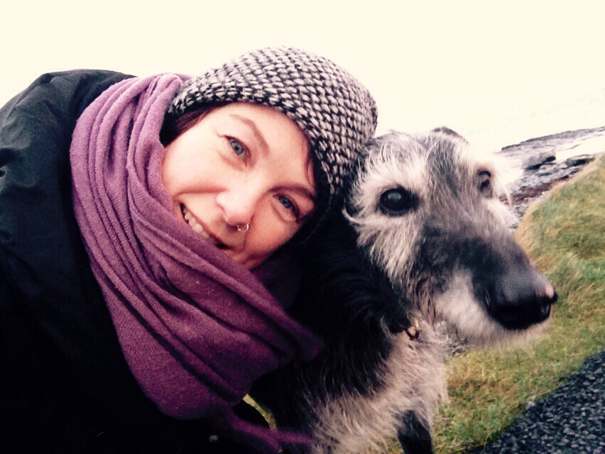
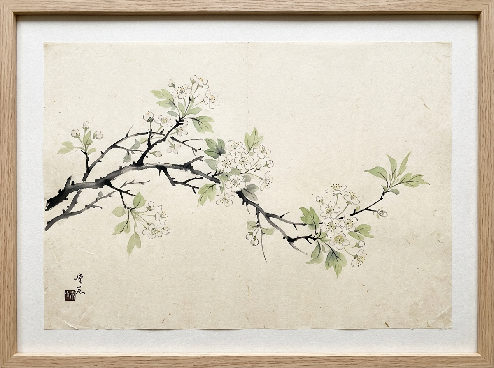

Where Two Ancient Traditions Meet in the Burren
In Irish folklore, the hawthorn is sacred—a boundary tree standing between worlds, symbolising resilience, protection, and the earth's pulsing life force. In Traditional Chinese Medicine, vitality is similarly understood as a living boundary: a harmonious dialogue between our inner constitution and the turning seasons.
Founded by Maureen Murphy, a registered and insured practitioner, The Hawthorn Tree Clinic bridges evidence-informed acupuncture, restorative cupping, and mindful seasonal yoga from a tranquil sanctuary in Gort.

Maureen Murphy & Blackboy
On the limestone cliffs of the Burren, Galway

The Hawthorn Branch (Crataegus)
Traditional Irish heart guardian · Symbol of boundary, resilience & rebirth
Rooted in the Burren, Guided by the Seasons
Traditional Irish country folklore has always known what modern medicine often forgets: human vitality is inseparable from the turning of the land—from the dark, restorative stillness of Samhain to the fiery, expansive vitality of Beltane.
Traditional Chinese Medicine shares this exact living cosmology. TCM maps the micro-cosmos of the human body onto the macro-cosmos of nature's Five Elements (Wood, Fire, Earth, Metal, and Water). Just as a native hawthorn tree bends with the Atlantic gales across the Burren limestone pavement, our health thrives when we restore flexibility and ease to our vital meridians.
Maureen brings deep clinical training, gentle needle technique, and compassionate listening to every treatment. Her goal is never simply to suppress a symptom, but to unravel the root imbalance so your body can re-establish its natural rhythm.
Professional Standards
Member of Acupuncture Foundation Ireland. Strict single-use sterile needle protocols and dedicated continuing development.
Integrative & Safe
Working safely alongside your GP or Western medical specialists to support chronic pain, nervous tension, and wellbeing.
Restoring Flow, Releasing Tension
Each session is tailored to your unique constitutional pattern, combining time-honoured oriental therapies in a peaceful, unhurried environment.
TCM Acupuncture & Vitality
Restoring the smooth flow of Qi
In Traditional Chinese Medicine, health is the unhindered flow of Qi through meridian pathways. Fine, sterile needles gently clear blockages, easing chronic pain, digestive distress, hormonal imbalances, and nervous exhaustion.
- Safe, single-use micro-fine sterile needles
- Gentle and restorative session pace (60–75 mins)
- Pulse and tongue diagnosis for constitutional root care
- Receipts provided for major Irish health insurers
Traditional Cupping Therapy
Myofascial decompression & deep muscular ease
Drawing on ancient Eastern techniques, glass and silicone suction cups are placed along the back, shoulders, or legs to improve microcirculation, disperse stagnant lactic build-up, and release tension stored deep in the body.
- Relieves persistent back, neck, and shoulder tightness
- Encourages fresh blood and oxygen flow to tight fascia
- Complements acupuncture for musculoskeletal injury and recovery
- Safe, traditional technique with immediate easing
Season-Led Mindful Yoga
Grounding practices aligned with the earth's rhythm
A gentle, restorative practice structured around the turning of the Irish seasons and the Five Elements of TCM. Moving with intention anchors the mind and builds rooted resilience, like the hardy hawthorns of the Burren crags.
- Small, supportive group settings and private 1-on-1 tuition
- Postures and breathwork mapped to seasonal meridian lines
- Accessible to all bodies and experience levels
- Cultivates stillness, joint mobility, and nervous system recovery
Common Conditions Supported at The Hawthorn Tree Clinic:
Limestone, Rain, and the Five Elements
The Burren is one of the world's most extraordinary landscapes. Its vast karst limestone pavements might appear austere at first glance, yet within the deep fissures (grykes) shelter delicate arctic-alpine and Mediterranean herbs, wild thyme, and blossoming hawthorn trees.
This unique ecosystem embodies the central tenet of Traditional Chinese Medicine: balance between Yin and Yang. The cold, mineral stillness of the limestone stone (Yin) creates a protected nursery for warm, vibrant floral life (Yang).
When Maureen treats patients in Gort, she works with this same organic intelligence. Acupuncture acts not by forcing change, but by clearing obstacles so the body's internal landscape can bloom again.
What to Expect at Your Appointment
Acupuncture needles are hair-thin and flexible—very different from medical injection needles. Most patients feel only a momentary dull warmth, heaviness, or pleasant tingling sensation known as "De Qi", followed by a deep sense of calm and relaxation.
Wear loose, comfortable clothing. We begin with a comprehensive holistic consultation covering your current symptoms, sleep, digestion, and wellbeing history, followed by pulse and tongue diagnosis, and your initial treatment tailored to your constitution.
Yes. Maureen is a fully registered and insured practitioner. Official receipts are provided and can be claimed back with major health insurance providers in Ireland (VHI Healthcare, Laya Healthcare, and Irish Life Health) according to your specific plan.
The clinic is set in a quiet, dedicated healing sanctuary in Gort, County Galway, easily accessible from South Galway, Ennis, Loughrea, Kinvara, and North Clare.
Begin Your Care
Whether you are seeking relief from a longstanding complaint or simply need a space to restore equilibrium, Maureen welcomes all questions before you book.
Clinic Sanctuary
Gort, County Galway, Ireland
Directions and parking details provided with appointment booking.Direct Telephone
(00353) 86 347 1669Email Enquiry
info@hawthorntreeacupuncture.comConsultation Hours
By appointment Monday to Saturday. Evening availability upon request.
Receipts stamped for all major health insurance claims and revenue medical expense relief (Med 1).
Send an Appointment Enquiry
Please share a few details so Maureen can tailor your consultation.